1.- Instalación de la máquina con Windows 7.
- Lo primero que nos preguntará VirtualBox al arrancar la nueva máquina es
la ISO que queremos insertar, elegiremos Windows 7.
- Después de seleccionarla, el siguiente paso es elegir el idioma, deberemos
también, aceptar los términos de licencia de Windows y el tipo de
instalación, elegiremos la personalizada(avanzada).
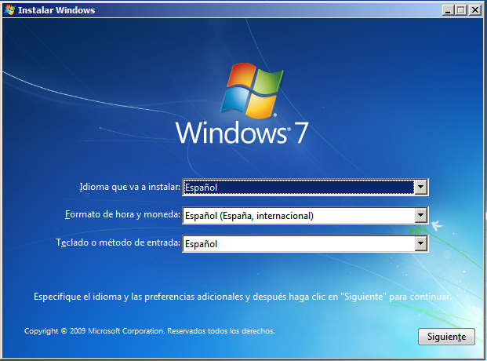
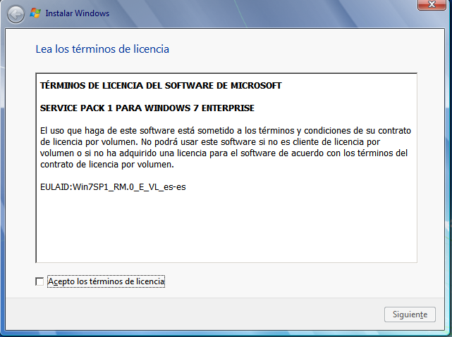
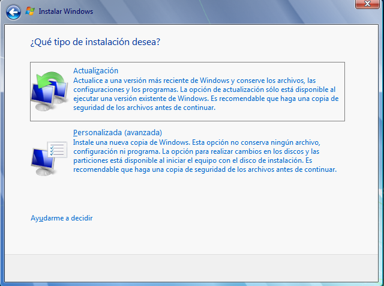
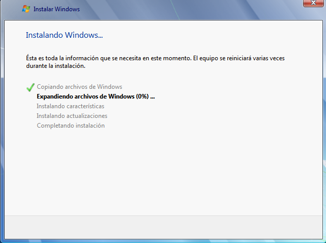
2.- Configuración de máquina Windows 7.
- Al finalizar la instalación nos preguntará el nombre de usuario y el nombre
del equipo.
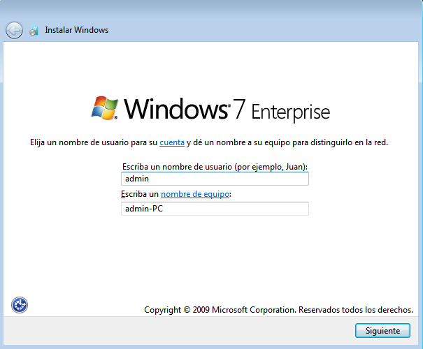
- A continuación nos pregunta la contraseña para el usuario que acabamos
de crear.
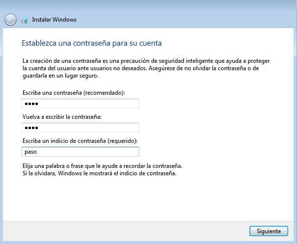
- Nos dará a elegir la configuracion del equipo.
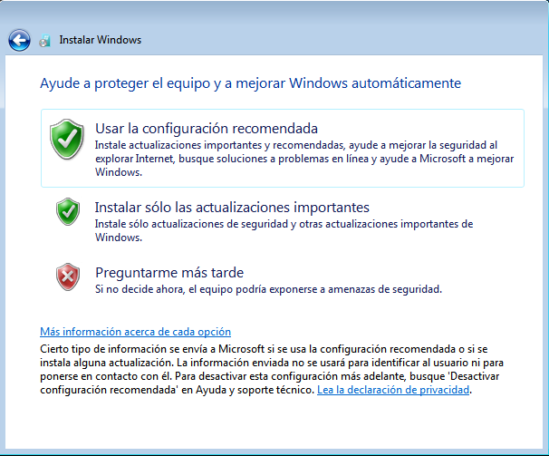
- Ahora no pedirá el tipo de red que queremos para nuestro equipo.
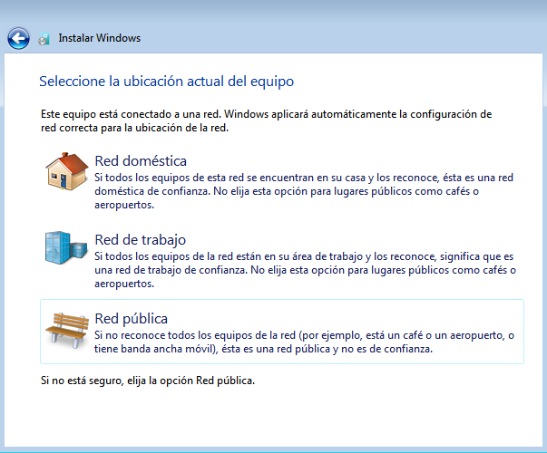
3.- Configuración de la red.
- Configuraremos la red de forma estática con IPv4.
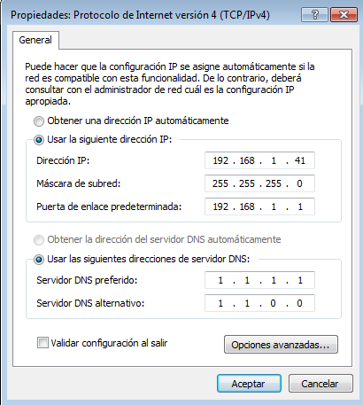
4.- Distribución de las particiones de la máquina.
- Esto lo haremos en la Administración de equipos.
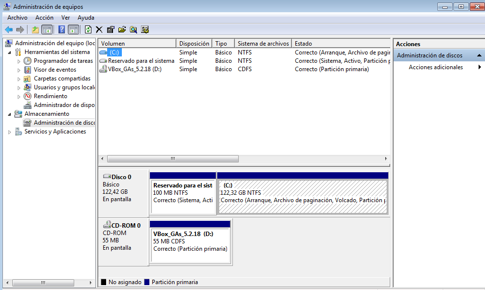
5.- Creación de los usuarios de la máquina.
- Esto también lo haremos en la Administración de equipos.
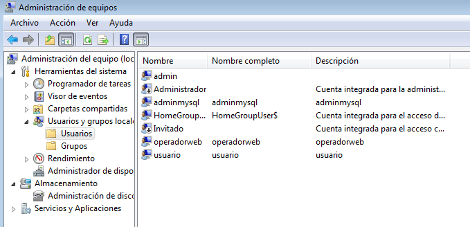
6.- Instalación de XAMPP.
- Ejecutamos el siguiente instalador que podemos encontrar en Internet.
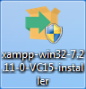
7.- Prueba de funcionamiento de XAMPP.
- Arrancaremos XAMPP desde la carpeta que elegimos durante su
instalación.
- Iniciamos los dos primeros servicios y en el navegador escribimos
localhost/rutaarchivoaejecutar.
- Los proyectos debemos guardarlos en la carpeta en la que se instaló en
xampp/htdocs.
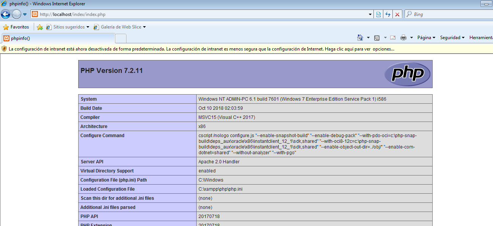